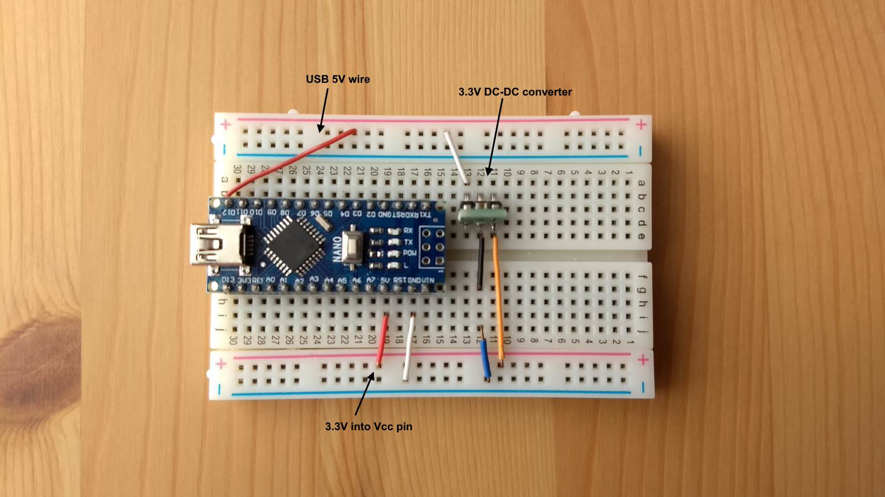

To program the microcontroller, connect it to a computer with a USB cable and 5V is supplied by the USB Vbus. But there are good reasons to run it on 3.3V:
- A lot of devices such as nRF24L01+ transceiver, BME280 sensor, etc all run at 3.3V max. Hence interfacing to a 3.3V Nano means common supply and no i/o level shifting required.
- Running it on 3.3V at 8MHz leads to lower power consumption for a portable device.
- You can directly run the Nano and sensors on 2 AA batteries.
- A 5V 16MHz Nano clone cost USD2.91 while the 3.3V 8MHz version is USD3.36 on banggood.com
But here is a simple solution that does not require component change or soldering. If the USB 5V is converted to 3.3V before it reaches the socket on the Nano board, the Nano works fine without hardware modifications. The IDE recognises it like a normal Nano and sketches will upload seamlessly. Very handy if you want to reuse 5V for Vcc in future.
This method has been tested on a Nano clone that uses the CH340G USB chip. The real Nano uses an FTDI USB chip and has not been tested(though the schematic seem to indicate this would work too). The USB voltage converter circuit looks like this:
{kind=link}
The system clock frequency should be reduced from 16 to 8MHz according to Atmel ATMEGA328P datasheet even though many have reported no problems running 16MHz at 3.3V.

The ATMEGA328P has an internal 8MHz RC oscillator that can be enabled with the proper fuse settings. While not as accurate as a crystal or resonator, it is good enough for serial speed of 38400 baud. In order to change the clock frequency, the easiest approach is to install the Minicore bootloader.
Minicore Installation
Minicore from MCUdude is an Arduino core for the ATmega328, ATmega168, ATmega88, ATmega48 and ATmega8, running a custom version of Optiboot for increased functionality. This core gives you two extra IO pins, PB6/PB7 mapped to Arduino pin 20/21 if you're using the internal oscillator, but the most useful feature is a variety of clock frequencies to choose from.To install it, use the Boards Manager Installation method. Basically in the IDE File -> Preferences -> Additional Boards Manager URLs, append the line:
https://mcudude.github.io/MiniCore/package_MCUdude_MiniCore_index.json
Once installed, select the options to burn the ATmega328 bootloader (8MHz internal clock) with a programmer like DIY USBtinyISP-compatible AVR programmer.Wire the programmer for 3.3V as shown and click Burn Bootloader.
The IDE console output should look like IDE_log.txt. There are 2 steps to the burn:
- Set Extended,High,Low fuses: -Uefuse:w:0b11111111:m -Uhfuse:w:0xd6:m -Ulfuse:w:0xe2:m
- Erase, write, read and verify chip.
S:\SOE\arduino-1.8.8\portable\packages\arduino\tools\avrdude\6.3.0-arduino17/bin/avrdude -CS:\SOE\arduino-1.8.8\portable\packages\MiniCore\hardware\avr\2.0.3/avrdude.conf -v -patmega328p -cusbtinyTo interpret the fuses, plug the hex values into AVR fuse calculator. You can also enter new values and view the resulting device configuration.
Example of writing new CKOUT fuse to enable clock output on pin 8. Be absolutely sure of all settings as you cannot use a Dragon for HVPP rescue. Some required mcu pins are not broken out on the board. Beware of EHL versus LHE!
S:\SOE\arduino-1.8.8\portable\packages\arduino\tools\avrdude\6.3.0-arduino17/bin/avrdude -CS:\SOE\arduino-1.8.8\portable\packages\MiniCore\hardware\avr\2.0.3/avrdude.conf -v -patmega328p -cusbtiny -U lfuse:w:0xa2:m -U hfuse:w:0xd6:m -U efuse:w:0xff:m
Once the chip is programmed, disconnect the jumper wires, change the IDE Programmer back to AVRISP mkII, and connect the USB voltage converter to the Nano. Upload a modified Blink sketch:
void setup() {
pinMode(LED_BUILTIN, OUTPUT);
Serial.begin(38400);
Serial.print("F_CPU ");
Serial.println(F_CPU);
}
void loop() {
digitalWrite(LED_BUILTIN, HIGH);
delay(10);
digitalWrite(LED_BUILTIN, LOW);
delay(990);
}
In the Serial Monitor, the compiler flag for 8MHz CPU will be displayed as:
F_CPU 8000000The onboard LED should also blink at 1Hz as a confirmation. A new bootloader(with different fuse settings) has to be burnt each time the clock frequency is changed. Note that Upload Using Programmer does not affect the fuse settings ie, the bootloader will be erased but the fuse settings remain. The full 32KB of flash is available for the sketch.
A similar method can be applied to run an Arduino Pro Mini at 1MHz with 2 AA batteries for a low power outdoor weather sensor.
Latest Update
An alternative to the USB cable breakout is to intercept the 5V input on the board where the schottky diode is. Desolder the diode and solder a short wire to it.This wire carries the 5V which is stepped down by an off-board 3.3V converter and fed back to 5V (Vcc) pin of the Nano.

Note: you cannot use Vin at the same time as the onboard regulator will convert the raw input to 5V. This feeds into Vcc which will then ruin any 3.3V devices connected to the Nano. You can replace the regulator with 3.3V but desoldering it is awkward.